Leah Felty - El Corazón
Hey everyone, my name is Leah Felty!
I’m a Character Designer and Illustrator. I really value versatility in my work and consider myself a chameleon artist, switching from style to style. I also enjoy various subject matter, but one of my favorites is dark fantasy, where you can appreciate both beauty and the grotesque simultaneously. I also love nature and see the world with a child-like sense of wonder that I will always fight fiercely to protect. Some of my favorite characters are those who are misunderstood, live on the fringe, or carry a pain in their hearts. I like characters who are imperfect, resilient, and a little wild.
For this reason, some of my favorite films are from LAIKA, Cartoon Saloon, Guillermo Del Toro, and Studio Ghibli.
My other passion is traveling! Not for leisure or vacation, but for deep exploration and learning. As a child, I developed this love on long cross-country road trips with my mom and while spending the winters at my grandparents’ ranch in Mexico. Recently, I studied abroad in Florence, Italy and in South Korea and my dream is to work internationally as an animation designer and illustrator. I see myself as a global citizen and I enjoy immersing myself in research of other cultures. My most recent project is the visual development art for an adaptation of a Korean Shamanic folktale called Barigongju: The Abandoned Princess. For this project, I have begun learning the Korean language, history, and the design aesthetics, and am developing a deeper understanding of Korean Shamanism. Although I love everything I’ve learned about Korean culture, this project is one case study among many to come! I would like to continue with other cultures, such as Irish and Mexican culture. My goal is to become a research-based artist who can gain insight into new cultures, understand the shared human experience, and then distill that into the visual language of film and illustration in a way that that connects people. Thank you for taking a look at my work! 🎃🌱
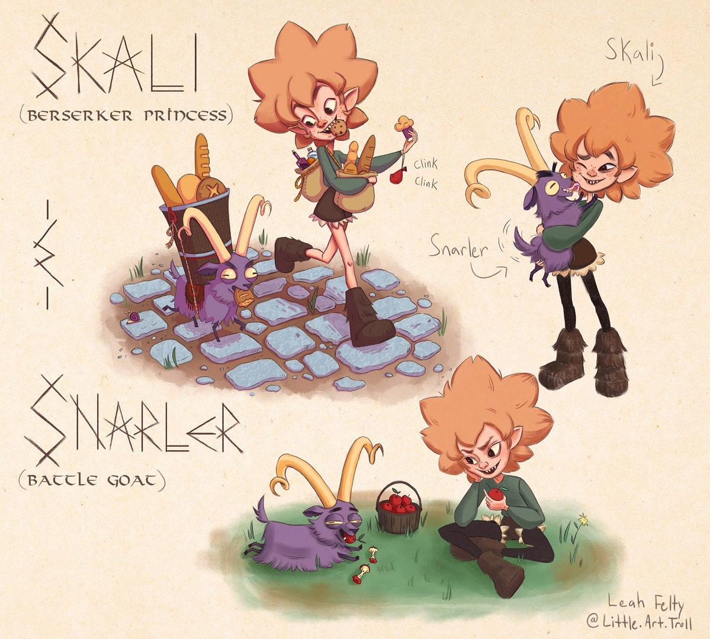


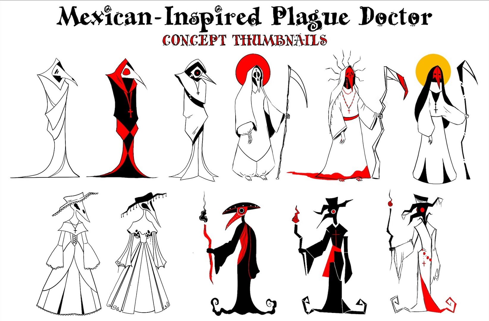
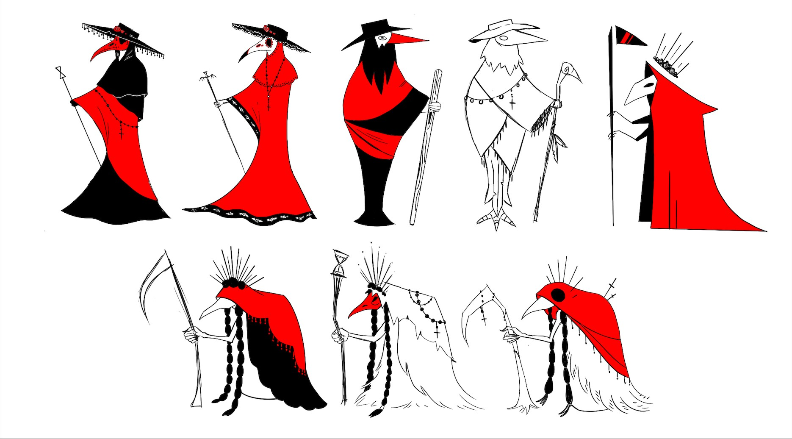
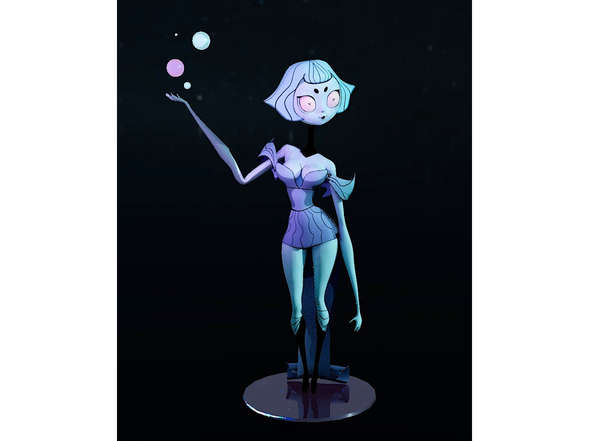
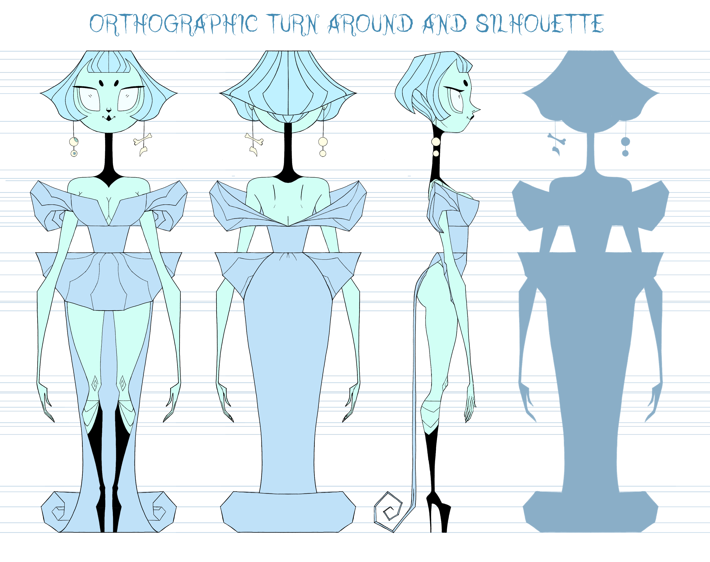
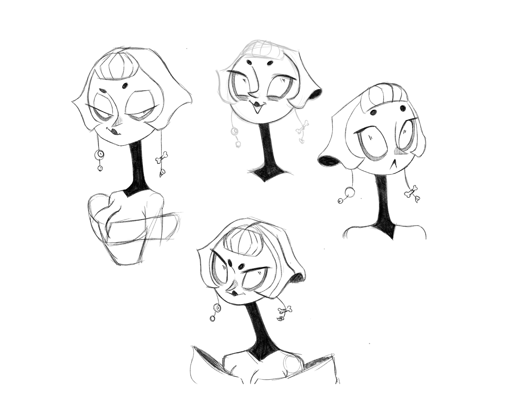
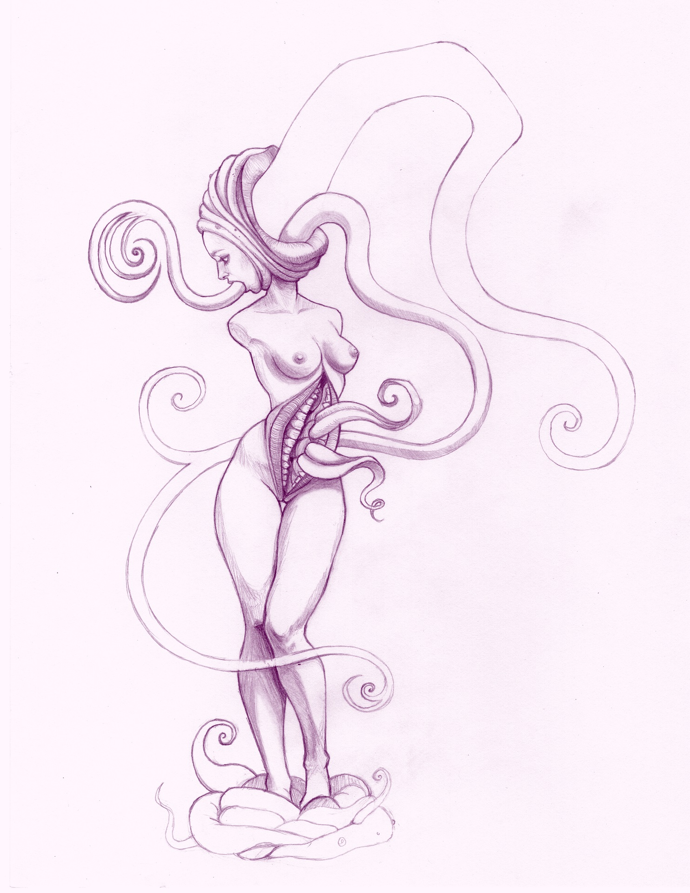
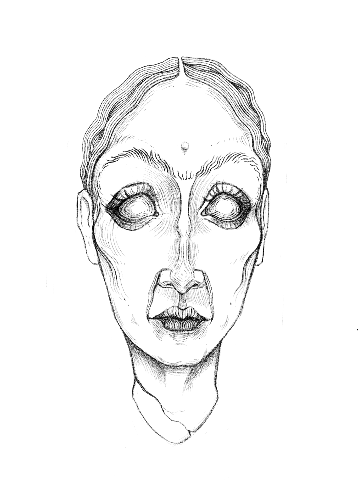
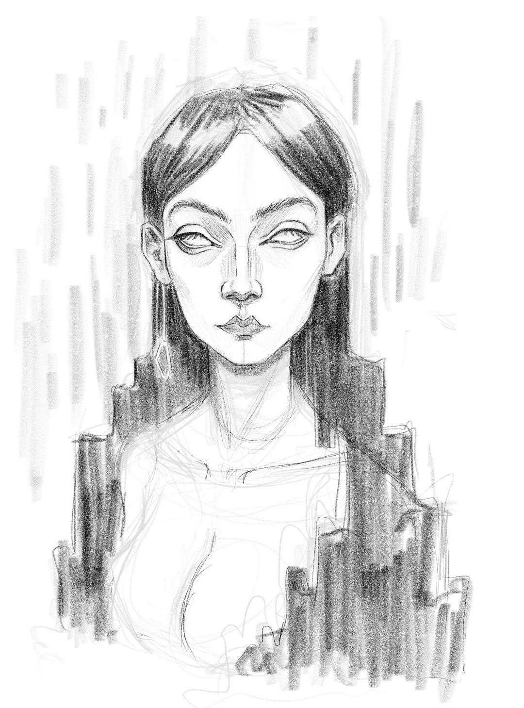

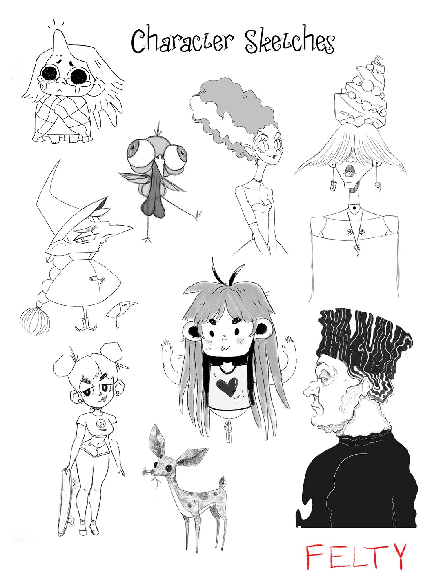
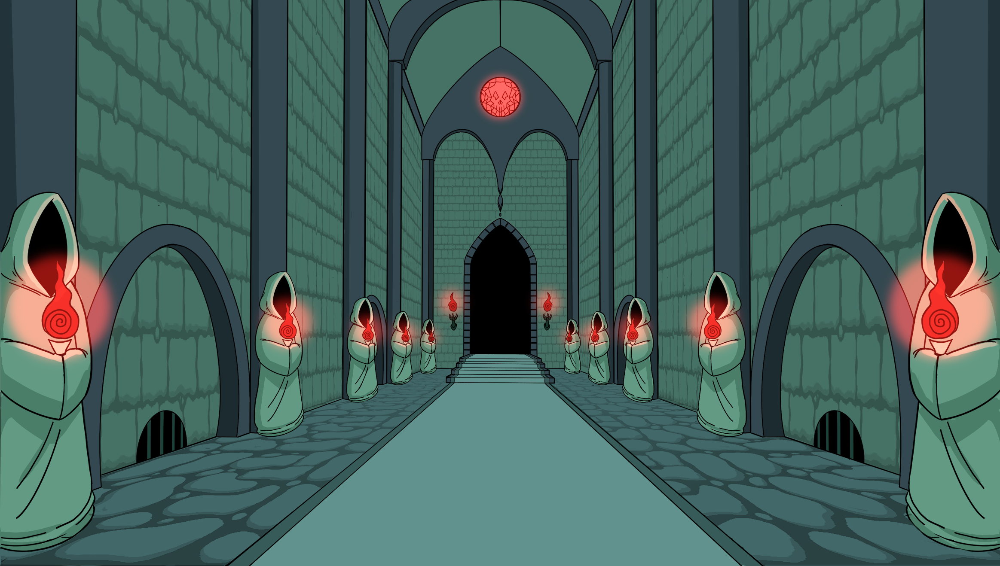